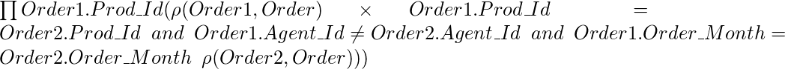
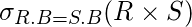

In this article, I will discuss common types of questions in relational algebra which are asked in GATE. Before reading this article, you should have idea about basic and extended operators in relational algebra.
Basic operators in Relational Algebra
Extended operators in relational algebra
Type 1: Given a relational algebra expression, find the result. Suppose you have a relation
Order (Prod_Id, Agent_Id, Order_Month) and you have to find out what will the following algebra expression return.

To solve these types of questions, process the expression starting from innermost brackets. In this example, we have renamed order to Order1 and Order2 (Both represent the same relation order). Then we have applied the conditional join between Order1 and Order2. It will return those rows where Product_Id and Order_Month of Order1 and Order2 are same but Agent_Id of Order1 and Order2 is different. It implies the rows where same product is ordered by two different agents in the same month. Then we are projecting the Prod_Id. So the final output will return the Prod_Id of products which are ordered by different agents in the same month. We can do this by taking a sample data. Let Order relation consists of following data.

When we apply the following expression, the rows which are highlighted in blue will be selected.

{kind=link}
After projecting Order1.Prod_Id, the output will be P002 which is Prod_Id of products which are ordered by at least two different agents in same month.
Note: If we want to find Prod_Id which are ordered by at least three different agents in same month, it can be done as:
![\prod Order1.Prod\_\hspace{0.cm}Id(\sigma Order1.Prod\_Id=Order2.Prod\_Id \hspace{0.2cm} and \hspace{0.2cm} Order1.Prod\_Id = Order3.Prod\_Id \hspace{0.2cm}and \hspace{0.2cm} Order1.Agent\_Id \neq Order2.Agent\_Id \hspace{0.2cm} and \hspace{0.2cm} Order1.Agent\_Id \neq Order3.Agent\_Id \hspace{0.2cm} and \hspace{0.2cm} Order2.Agent\_Id \neq Order3.Agent\_Id \hspace{0.2cm} and \hspace{0.2cm} Order1.Order\_Month = Order2.Order\_Month \hspace{0.2cm} and \hspace{0.2cm} Order1.Order\_Month = Order3.Order\_Month(\rho (Order1, Order)\times \rho(Order2, Order)\times \rho(Order3, Order)))](../../../imgs/db/85d93f1c552c954b4214d369a198e578.jpg "Rendered by QuickLaTeX.com")
Type 2: Given two relations, what will be the maximum and minimum number of tuples after natural join? Consider the following relation R(A,B,C) and S(B,D,E) with underlined primary key. The relation R contains 200 tuples and the relation S contains 100 tuples. What is the maximum number of tuples possible in the natural Join R and S?
To solve this type of question, first we will see that on which attribute natural join will take place. Natural join selects those rows which have equal values for common attribute. In this case, expression would be like:

In relation R, attribute B is primary key. So Relation R will have 200 distinct values of B. On the other hand, Relation S has BD as primary key. So attribute B can have 100 distinct values or 1 value for all rows.

In this case, no value of B in S will match to a value of B in R. So natural join will have 0 tuple. So the maximum number of tuples will be 100 and min will be 0.
Note: If it is explicitly mentioned that S.B is foreign key to R.B, then Case 3 and Case 4 discussed above are not possible because value of S.B will be from the values of R.B. So, minimum and maximum number of tuples in natural join will be 100.